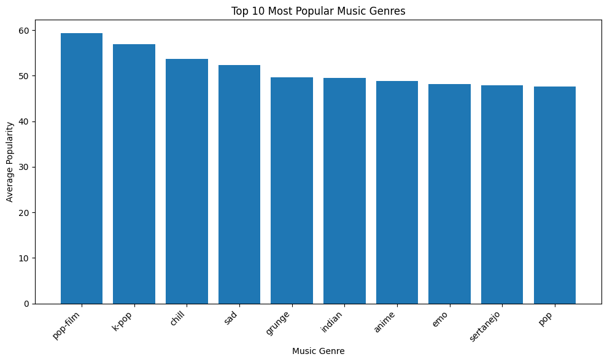
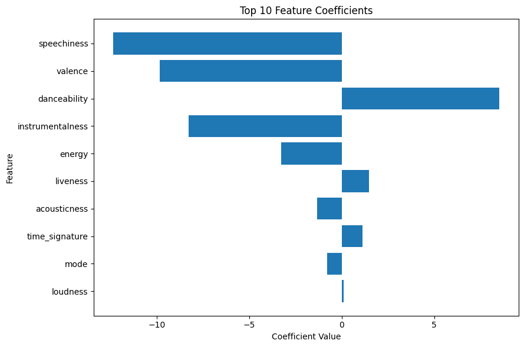
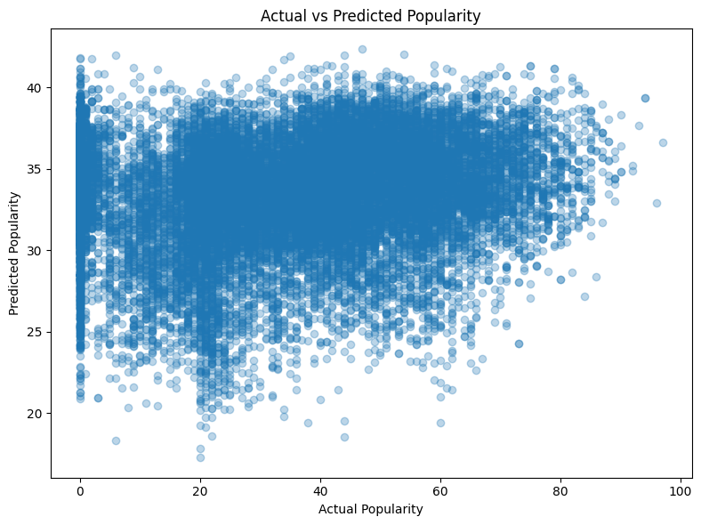

Project demo / Data analysis
Spotify Music
Popularity Analysis.
An analysis of Spotify track data covering genre popularity, top tracks, numerical audio features, and a baseline linear regression model for predicting track popularity.
Clean dataEDATrain / test splitLinear regressionR² + RMSECoefficient analysis


